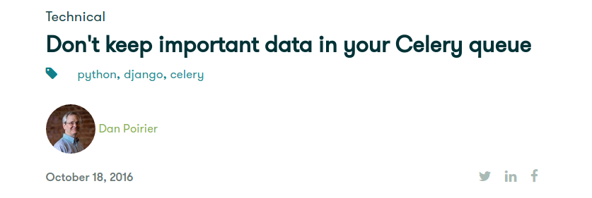
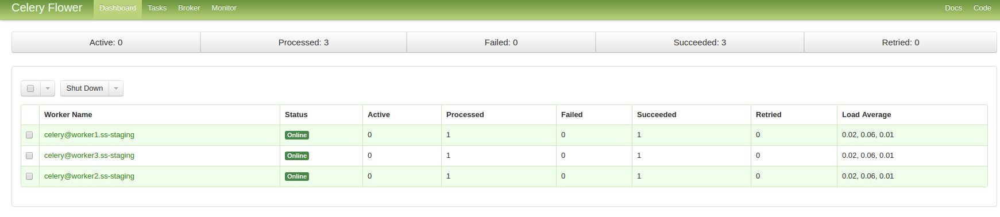

Demystifying Celery
Sam Clarke
Celery

Who I am
- Technical Director @ Rival Schools
- Lead Developer @ Script Speaker
Who I am NOT
- Not a core dev of Celery
- Not an expert
Why this talk?
- New things are hard.
- Distributed what?
- It's not just Python?
What is Celery?
- Celery is written in Python.
- Celery is a task queue.
- Django-Celery is also a thing.
Do I need Celery?
- Maybe you don't (your app is syncronous).
- You have tasks which don't need to be executed syncronously.
- You are configuring your application for performance where available resources are a concern.
Do I need Celery?
Introducing Celery into your application is trade-off between performance and complexity.
Do I need Celery?
Even though it adds complexity, Celery is still one of my go-to tools for any new web app.
Even apps of modest size can benefit from a task queue.
How Does Celery work?
Celery Brokers
- Celery communicates via messages, usually using a broker to mediate between clients and workers.
- Common brokers are RabbitMQ, Redis.
Celery Backends
- Celery can store task state (optional) using a results backend.
- Common result backends include RabbitMQ, Redis, MemcacheD, SQL, Elasticsearch.
Workers & Concurrency
- A worker is a Celery process.
- By default multiprocessing is used to perform concurrent execution of tasks.
- The number of worker processes/threads can be changed using the --concurrency argument and defaults to the number of CPUs.
Setting Up Celery
Install system packages
- sudo apt-get install rabbitmq-server (redis)
- pip install celery
Instantiating Celery
# app.py
from celery import Celery
celery = Celery(
'tasks',
broker="amqp://guest@localhost//",
backend="redis://localhost:6379/0"
)
# Note: in production, use a deciated user/ vhost
# with appropriate permissions
or...
Using a config file
# app.py
from celery import Celery
celery = Celery()
celery.config_from_object('celery_config')
# celery_config.py
import os
BROKER_URL = os.environ['BROKER_URL']
CELERY_RESULT_BACKEND = os.environ['BACKEND_URL']
CELERYD_POOL_RESTARTS = True
...
Registering Tasks
Regular Function
def send_email(user_id):
user = User.objects.get(id=user_id)
subject = 'Welcome, {}'.format(user.username)
body = 'Hello from Celery'
send_email(user.email, subject, body)
# call task synchronously
send_email(user_id=1234)
Celery Function
from app import celery
@celery.task
def send_email(user_id):
user = User.objects.get(id=user_id)
subject = 'Welcome, {}'.format(user.username)
body = 'Hello from Celery'
send_email(user.email, subject, body)
# call task asynchronously
send_email.delay(user_id=1234)
Don't pass stateful objects
@celery.task
def send_email(user_id):
user = User.objects.get(id=user_id)
subject = 'Welcome, {}'.format(user.username)
body = 'Hello from Celery'
send_email(user.email, subject, body)
# why not just pass in the user object?
send_email.delay(user_id=1234)
Starting Celery
celery worker --app app.celery --concurrency 4
- app (-A): relative path to celery instance
- concurrency (-C): number of child process
Example output from a Celery worker running locally.
Getting Results
# This complex function returns a useful result
@celery.task
def add(x, y):
return x + y
# This is not what you may expect...
result = add.delay(5, 7)
Getting Results
from celery import Celery
from celery.result import AsyncResult
@celery.task
def add(x, y):
return x + y
# get reference to task and keep it somewhere
task = add.delay(5, 7)
# get task object by id
result = add.AsyncResult(task.id)
if result.ready():
return result.get()
else:
# wait more
...
Getting Task State
# tasks have a state of 'SUCCESS', 'PENDING' or 'FAILURE'
result = add.AsyncResult(task.id)
if result.state == 'SUCCESS':
return result.get()
else:
# wait more
...
Custom States
Sometimes you need more detailed state messages.
# This task has more specific status, outside of Celery.
# e.g. filesize
...
percent_done = self.get_progress()
task.update_state(
state='PROGRESS',
meta={'progress': percent_done}
)
Keeping state outside of Celery
This blog post: http://bit.ly/2eqd1DZ
Keeping state outside of Celery
Here we don't rely on Celery's task status to let us know whether the task completed successfully.
user = User(
username='foo', email='foo@bar.com', email_sent=False)
# Note that we tell Celery to ignore the result
@celery.task(ignore_result=True)
def send_email(user_id):
user = User.objects.get(id=user_id)
...
# record state in User profile
user.email_sent = True
user.save()
Useful Task methods
- task.get() - blocks until ready. Returns result or Exception.
- task.successful() - returns True or False
- task.ready() - returns True if task is done.
- task.revoke() - workers will ignore task. If terminate=True, execution is killed.
Chaining Tasks
- Sometimes you may want to pass the signature of a task invocation to another process or as an argument to another function.
- Tasks can be linked together: the linked task is called when the task returns successfully.
Chaining Tasks
s() is a shortcut for signature(), using star arguments.
from celery import chain
# the second task takes result of first task and 10 as args
tasks = chain(add.s(5, 7), add.s(10)).delay()
# use ids to obtain each task object
result_one = add.AsyncResult(tasks.parent.id).result
result_two = add.AsyncResult(tasks.id).result
A Word on Testing
You probably don't want to wait for your unit tests to execute asynchronously.
Testing Options
- Use Celery's ALWAYS_EAGER mode.
- Use task.apply_async() instead of task.delay().
- Django has it's own CeleryTestSuiteRunner.
Celery in Production
Daemonizing Celery
- You need to be able to run Celery workers in background and restart workers automatically.
- Daemonizing services include Init, Upstart*, SupervisorD.
Daemonizing Celery using Upstart
/etc/init/celeryd.conf
description "celeryd"
start on runlevel [2345]
stop on runlevel [!2345]
setuid celery
setgid celery
respawn
chdir /path/to/app
script
. /etc/environment
export PATH=/path/to/.env/bin
exec celery worker -A app.celery -c 4 -n worker1.%h
end script
Monitoring
Logging
- Celery has its own logging handler.
- Your regular logs will get swallowed. Though there is the CELERYD_HIJACK_ROOT_LOGGER option.
- You can also set up per-task logging.
Logging
import logging
from celery.utils.log import get_task_logger
# Normal logging
handler = logging.StreamHandler()
logger.addHandler(handler)
# CELERY logging
# create a common logger for all of your tasks
celery_logger = get_task_logger(__name__)
@celery.task(ignore_result=True)
def send_email(user_id):
...
celery_logger.info(
'Email Sent to {}'.format(user.username))
Celery Flower
Celery Flower
port :5555

pip install flower
celery flower -A app.celery --loglevel=info
Task Priority
"RabbitMQ supports priorities since version 3.5.0, and the Redis transport emulates priority support."
In Production, it is best to route high-priority tasks to dedicated workers.
Distributing Workers
- Add hosts address. TODO: clarify this.
- Each host must have access to the task code locally.
Celery Alternatives
- Huey. https://github.com/coleifer/huey
Take Aways
- Don't send objects to tasks. State can change.
- Use the Celery Logger.
- Many small tasks are better than one large one.
- Don't block. If you need to wait for the result it's not asychronous.